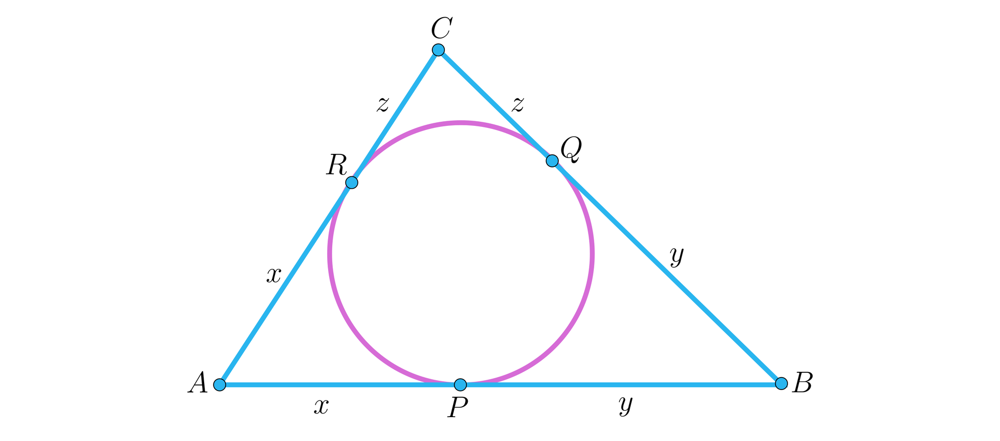

| Miejsce | Nick Discord | Punkty |
|---|
§ 1. Organizator
Organizatorem konkursu jest założyciel bloga.
§ 2. Uczestnicy
Konkurs jest skierowany przede wszystkim do tegorocznych maturzystów. Mogą w nim również brać udział uczniowie młodszych klas. Uczestnikiem może zostać każda osoba, która odbyła z organizatorem co najmniej jedną lekcję.
§ 3. Dobrowolność udziału
Udział w konkursie jest dobrowolny.
§ 4. Punktacja
Każde zadanie konkursowe jest warte 5 punktów.
§ 5. Samodzielne rozwiązywanie zadań
Obowiązuje całkowity zakaz korzystania ze sztucznej inteligencji (AI) oraz wyszukiwania rozwiązań w Google i innych wyszukiwarkach internetowych, chyba że organizator wyraźnie postanowi inaczej.
§ 6. Przesyłanie rozwiązań i terminy
Rozwiązania należy przesyłać organizatorowi w prywatnej wiadomości na Discordzie. Nowe zadania są publikowane w każdą niedzielę po godzinie 21:00. Czas na rozwiązanie każdego zadania wynosi 7 dni (tydzień) od jego publikacji, chyba że organizator poinformuje o innym terminie.
§ 7. Nagrody
W okolicach czerwca przewidziane są nagrody rzeczowe dla trzech uczestników z najwyższą liczbą punktów.
§ 8. Zmiany regulaminu
Organizator zastrzega sobie prawo do zmiany regulaminu w trakcie trwania konkursu z dowolnego powodu.
Jaki jest stopień wielomianu \(P(x) = (x-a)(x-b)(x-c)\cdots(x-z)\)
Wskazówka dla zmyły: alfabet angielski liczy 26 liter
Przechodzimy przez WSZYSTKIE litery alfabetu angielskiego...
Kluczowa jest tu obserwacja, że litera \(x\) też występuje w alfabecie. Wobec tego, w pewnym nawiasie (konkretnie to w przed, przed, przedostatnim :D) pojawi się \((x - x) = 0\). A skoro wielomian jest w postaci iloczynowej i jeden z czynników jest zerem, to cały wielomian jest tożsamościowo równy \(0\).
Jaki jest jego stopień? No najlepszą odpowiedzią jest właśnie, że stopień jest nieokreślony/niezdefiniowany. Dlaczego?
No gdy mamy \(f(x) = a = const \neq 0\), to stopień wiel. \(f\) jest równy \(0\), bo to wielomian stały. \(P(x) = 0\) także jest wielomianem stałym, ale z jego stopniem jest problem.
Na pewno słyszeliście, że wielomian stopnia \(n\) może mieć co najwyżej \(n\) pierwiastków, czyli \(n\) miejsc zerowych. A \(P(x) = 0\) ma ich tak z grubsza nieskończenie wiele, bo każda liczba rzeczywista jest jego pierwiastkiem. Czyli co w takim razie?
Stopień wielomianu \(P(x)\) powinien w takim razie wynosić \(+\infty\)? No teoretycznie tak, ale z tym jest mały problem... Przy takiej umowie własność, że stopień iloczynu dwóch wielomianów jest równy sumie ich stopni, przestaje działać. Można to uratować, przyjmując, że jednak jego stopień to \(-\infty\), ale wtedy psuje się argument z liczbą miejsc zerowych.
Na maturę musicie wiedzieć, że liczba pierwiatków wielomianu stopnia \(n\) jest \(\leq n\). Natomiast jak się wybierzecie na jakieś studia matematyczne, czy coś, czego ogromnie Wam życzę, to się dowiecie, że istnieją struktury algebraiczne, w których NIE JEST to prawda i np. wielomian stopnia 3ciego może mieć w pewnej strukturze algebraicznej 4 pierwiastki, ot: taka ciekawostka.
Liczby \(a, b, c, d \in \mathbb{R}\) spełniają warunki: \[ \begin{cases} a + b + c + d > 0, \\ ab + ac + ad + bc + bd +cd > 0, \\ abc + abd + acd + bcd > 0, \\ abcd > 0, \end{cases} \] Udowodnij, że każda z liczb \(a, b, c, d\) jest dodatnia, tzn. udowodnij, że \(a > 0, b> 0, c > 0, d > 0\)
Rozważ wielomian, którego pierwiastkami są liczby \(a, b, c, d\).
Skorzystaj ze wzorów Viete'a. Wzory Viete'a są słuszne nie tylko dla równań/funkcji kwadratowych. Ładnie uogólniają się na wielomiany wyższych stopni
Wiele zadań w istocie rzeczy sprowadza się do znalezienia pierwiastka pewnego równania algebraicznego. Ale zdarza się, że podstępowanie odwrotne, czyli skonstruowanie wielomianu o z góry zadanych pierwiastkach jest równie efektywne...
Jak znaleźć wielomian, którego pierwiastkami są \(a, b, c, d\)? Najprostszym rozwiązaniem jest oczywiście wielomian unormowany:
\[W(x) = (x-a)(x-b)(x-c)(x-d) = x^4 -px^3 + qx^2 -rx + s\]
Współczynniki są powiązane z lewymi stronami nierówności w naszym układzie. Natychmiastowym wnioskiem jest, że musi być:
\(p, q, r, s > 0\). W takim razie gdyby \(x \leq 0\), to \(P(x) > 0\), czyli w szczególności \(P(x) \neq 0\). (Liczba dodatnia nie może być zerem). Zatem pierwiastki wielomianu muszą być dodatnie, bo nie mogą być niedodatnie :P
Liczby \(x, y, z\) spełniają układ równań:
\begin{cases} x + y + z = 1 \\ x^2 + y^2 + z^2 = 2 \\ x^3 + y^3 + z^3 = 3 \end{cases}
Problem:Ile wynosi suma \(x^4 + y^4 + z^4\) ?
Wskazówki do tego zadania i jego rozwiązanie znajduje się w moim artykule na temat wzorów Girarda - Newtona, link: Kliknij tutaj
Rozwiąż równanie \((x+1)(x+2)(x+3)(x+4) = 8\)
Nie wymnażajcie tego wszystkiego, bo powstanie wielomian 4 stopnia, którego wyraz wolny to 16. (zbyt dużo ma dzielników)
Mnożenie liczb jest działaniem łącznym (i przemiennym(!)), więc możecie sobie zgrupować: \([(x+1)(x+4)]\cdot[(x+2)(x+3)]\)
Jak otworzycie te dwa duże nawiasy, to będą podobne rzeczy w obydwu nawiasach
Sprowadźcie problem do prostszego problemu: przecież umiecie już rozwiązywać równania kwadratowe, umiecie?
Zastosujcie podstawienie (użyjcie zmiennej pomocniczej)
To równanie NIE MA pierwiastków wymiernych, więc nie stosujcie tw. o pierwiastkach wymiernych. Ono po prostu NIE ZADZIAŁA (tutaj akurat nie zadziała)
Przekształcamy równanie do postaci
\([(x+1)(x+4)] \cdot [(x+2)(x+3)] = 8 \iff (x^2 + 5x + 4)\cdot (x^2 + 5x + 6) = 8\)
Widzimy, że drugi nawias jest wyrażeniem o 2 większym niż wyrażenie w pierwszym nawiasie.
Niech \(t = x^2 + 5x + 4\). Wówczas równanie przybiera postać:
\(t(t+2) = 8 \iff t^2 + 2t - 8 = 0\)
Liczymy deltę: \(\Delta = 2^2 - 4\cdot1\cdot(-8) = 36 \implies \sqrt{\Delta} = 6\)
Pierwiastki: \(t_1 = \frac{-2-6}{2} = -4, t_2 = \frac{-2+6}{2} = 2\)
Wracamy do "oryginalnej" zmiennej, przypominamy sobie czym było \(t\)
\(t = x^2 + 5x + 4\)
\((x^2 + 5x + 4 = -4 \lor x^2 + 5x + 4 = 2) \iff x^2 + 5x + 8 = 0 \lor x^2 + 5x + 2 = 0\)
\(\Delta_1 = 5^2 - 4\cdot1\cdot 8 < 0 \implies x \in \emptyset\)
\(\Delta_2 = 25 - 4\cdot 1 \cdot 2 = 17 \implies \sqrt{\Delta_2} = \sqrt{17}\)
\(x_1 = \frac{-5-\sqrt{17}}{2} \lor x_2 = \frac{-5+\sqrt{17}}{2}\)
Ostatecznie, zbiorem rozwiązań wyjściowego równania jest \(x \in \{\frac{-5-\sqrt{17}}{2}, \frac{-5+\sqrt{17}}{2}\}\)
Liczby \(a, b, c \in \mathbb{R}\) spełniają warunek \(a + b + c = 0\). Udowodnij, że \(a^3 + b^3 + c^3 = 3abc\)
Rozwiązanie
Sposób I (łatwiejszy)
Każdy kto zna wzór skróconego mnożenia na sześcian sumy lub potrafi znaleźć go w Karcie Wzorów i użyć jest w stanie rozwiązać to zadanie.
Z założenia wyliczcie sobie którąś literkę, np. \(a + b = -c\) i działajcie na tym.
Z założenia \(a + b = -c\), podnosimy to stronami do potęgi trzeciej i korzystamy ze wzoru skróconego mnożenia.
\((a+b)^3 = (-c)^3 = -c^3\)
\(a^3 + 3a^2b + 3ab^2 + b^3 = -c^3 \iff a^3 + b^3 + c^3 = -3ab(a+b)\) Ale znowu, przecież \(a + b = -c \)
Zatem \(a^3 + b^3 + c^3 = -3ab\cdot(-c) = 3abc \ \blacksquare\) Q.E.D
Sposób II (trudniejszy)
Kto czytał mój wpis na blogu o wzorach Girarda - Newtona, ten widzi że można je tu użyć (dlaczego?)
Możecie też, tak jak to pokazywałem skonstruować sobie wielomian, którego pierwiastkami są \(a, b, c\) i pobawić się nim
Wiedząc, że \(\log_{a}p = 2, \log_b{p} = 3, log_{c}p = 6\) oraz \(abc \neq 1\), oblicz \(\log_{abc}p\)
Trzeba skorzystać z definicji logarytmu i ewentualnie wysilić się na tyle, by otworzyć kartę wzorów i znaleźć w niej wzór na zamianę podstaw logarytmu można też wygooglować sobie ten wzór.
Z definicji logarytmu wynikają równości: \(a^2 = p, b^3 = p, c^6 = p\), skąd: \(a = \sqrt{p} = p^{\frac{1}{2}}, b = \sqrt[3]{p} = p^{\frac{1}{3}}, c = \sqrt[6]{p} = p^{\frac{1}{6}}\)
W takim razie \(\log_{abc}p = \log_{{p^{\frac{1}{2}}\cdot p^{\frac{1}{3}}}\cdot p^{\frac{1}{6}}}p = \log_{p^{\frac{1}{2} + \frac{1}{3} +\frac{1}{6}}}p = \log_pp = 1\)
Rozwiązanie
Sposób I (metoda "szkolna", czysto obliczeniowo)
Potrzebne będzie tzw. podstawienie Raviego (ang. Ravi substitution) - wygooglujcie sobie. Poza nim, wszystkie narzędzia, których potrzebujecie by rozwiązać to zadanie są w Karcie Wzorów. Trzeba tylko połączyć fakty...
Niech \(S\) oznacza pole trójkąta \(\Delta ABC\). Zachodzą wzory (z karty wzorów):
\(S = \frac{abc}{4R} \implies R = \frac{abc}{4S}\) oraz \(S = r\cdot p \implies r = \frac{S}{p} = \frac{2S}{a+b+c}\)
Gdzie \(p\) jest połową obwodu, tzn. \(p = \frac{1}{2} \cdot (a+b+c)\)
Mamy udowodnić nierówność \(R \geq 2r \iff \frac{abc}{4S} \geq \frac{4S}{a+b+c} \iff abc(a+b+c) \geq 16S^2\)
Znowu otwieramy Kartę Wzorów i znajdujemy w niej tzw. wzór Herona na pole trójkąta: \(S = \sqrt{p(p-a)(p-b)(p-c)}\)
Potrzebne nam będzie tzw. podstawienie Raviego.
LEMAT
Jeżeli \(a, b, c\) są długościami boków trojkąta, to istnieją takie dodatnie liczby rzeczyswiste \(x, y, z\), że zachodzi:
\(a = x + y, b = x + z, c = z + y\)
Dowód lematu:
W każdy trójkąt można wpisać okrąg, bo w każdym trójkącie dwusieczne kątów przecinają się w jednym punkcie - istnieje środek okręgu wpisanego, punkt \(I\). Jest to prosty wniosek z tzw. trygonometrycznego twierdzenia Cevy, które to twierdzenie omówię w którymś z kolejnych artykułów.
Możemy zaznaczyć punkty styczności okręgu z bokami trójkąta. Wówczas na podstawie twierdzenia o odcinkach stycznych, albo w nomenklaturze olimpijskiej: najmocniejszego twierdzenia geometrii mamy:

\(a = |AB| = |AP| + |PB| = x + y\). Podobnie wyznaczamy \(b\) i \(c\)
Dzięki podstawieniu Raviego mamy: \(p = \frac{a+b+c}{2} = x + y + z, p - a = z, p - b = y, p - c = x\) i tym samym wzór Herona przybiera postać:
\[S = \sqrt{(x+y+z)xyz}\]
Dowodzona nierówność wygląda zatem tak:
\[(x+y)(x+z)(z+y)\cdot 2(x+y+z) \geq 16(x+y+z)xyz\]
Czyli równoważnie:
\[\tag{*} (x + y)(x + z)(z + y) \geq 8xyz\]. A ta nierówność jest bardzo łatwa do udowodnienia.
Przecież na mocy nierówności między średnimi: arytmetyczną i geometryczną zachodzi:
\(x + y \geq 2\sqrt{xy}, x + z \geq 2\sqrt{xz}, z + y \geq 2\sqrt{zy}\)
Wymnażając je stronami dostajemy nierówność (*), czyli tezę. \(\blacksquare\) Q.E.D
Zastanówmy, się kiedy w rozważanej nierówności zachodzi równość...
Wtedy, gdy w nierównościach między średnimi jest równość, czyli wtedy i tylko wtedy, gdy \(x = y, x = z, z = y\), co implikuje równość boków \(a = b = c\) czyli równoboczność trójąta.
Sposób II (metoda olimpijska)
Zachodzi twierdzenie Eulera o okręgach, które mówi że kwadrat odległości między środkiem okręgu opisanego i wpisanego jest równy iloczynowi promienia \(R\) okręgu opisanego i róznicy między tym promieniem a średnicą \(2r\) okręgu wpisanego.
Formalnie: Niech \(O\) oznacza środek okręgu opisanego, zaś \(I\) środek okręgu wpisanego. Wówczas:
\[|OI|^2 = R\cdot (R-2r)\]
Lewa strona powyższej nierówności jest nieujemna (\(\geq 0\)). Zatem prawa strona też taka musi być. Ale \(R > 0\) jako długość odcinka. Zatem drugi czynnik musi być nieujemny, czyli \(R - 2r \geq 0 \iff R \geq 2r\), skąd teza. \(\blacksquare\) Q.E.D
Zastanówmy się jeszcze, kiedy zachodzi równość? No... Jeżeli \(R = 2r\) to prawa strona równania się zeruje, czyli lewa też zatem \(|OI|^2 = 0 \implies O = I\), czyli w takiej sytuacji środek okręgu opisanego i wpisanego się pokrywają (to ten sam punkt).
Takie coś jest możliwe w trójkacie równobocznym (i jedynie w trójkącie równobocznym, żadnym innym :D)
To zadanie należy zrobić, mając do dyspozycji jedynie kartkę, głowę i coś do pisania. Obowiązuje ZAKAZ używania AI, kalkulatorów, stron internetowych zdolnych do przeprowadzania obliczeń symbolicznych itp.
Oblicz: \[ \frac{1}{1\cdot2\cdot3} + \frac{1}{2\cdot3\cdot4} + \frac{1}{3\cdot4\cdot5} + \cdots + \frac{1}{1000\cdot1001\cdot1002} \]
Każdy składnik jest postaci \(\frac{1}{k(k+1)(k+2)}\). Rozłóż to wyrażenie na tzw. ułamki proste. Patrz wsk. nr 2
Znajdź jakie liczby \(A, B, C\) dla których \(\frac{1}{k(k+1)(k+2)} = \frac{A}{k} + \frac{B}{k+1} + \frac{C}{k+2}\). W tym celu sprowadź to równanie do równania wielomianowego przemnażając stronami przez \(k(k+1)(k+2)\)
Skorzystaj z tzw. równości wielomianów, która pozwala przyrównać do siebie współczynniki. Powstanie układ 3 równań z 3ema niewiadomymi: \(A, B, C\). Rozwiąż go i teleskopuj sumę.
EDIT: Jednak nie trzeba tego rozkładać na sumę 3 ułamków prostych, to zadziała niby ale da się prościej... Ale ja bym nie wpadł na to...
Rozwiązanie zostanie opublikowane w najbliższą niedzielę po 21:00
Uprość sumę: \[ \frac{1}{\sqrt{1 + \sqrt{1^2 - 1}}} + \frac{1}{\sqrt{2 + \sqrt{2^2 - 1}}} + \frac{1}{\sqrt{3 + \sqrt{3^2 - 1}}} + \cdots + \frac{1}{\sqrt{100 + \sqrt{100^2 - 1}}} \]
Uprość iloczyn: \[ \left(1 - \frac{1}{2^2}\right)\cdot\left(1 - \frac{1}{3^2}\right)\cdot\left(1 - \frac{1}{3^2}\right)\cdots\left(1 - \frac{1}{100^2}\right) \]
Uprość sumę: \[ \frac{6^1}{(3^1 - 2^1)(3^2 - 2^2)} + \frac{6^2}{(3^2 - 2^2)(3^3 - 2^3)} + \frac{6^3}{(3^3 - 2^3)(3^4 - 2^4)} + \cdots + \frac{6^{100}}{(3^{100} - 2^{100})(3^{101} - 2^{101})} \]
Uprość sumę: \[ -\frac{1^2 + 1 + 1}{1!} + \frac{2^2 + 2 + 1}{2!} - \frac{3^2 + 3 + 1}{3!} + \cdots + (-1)^{2026}\frac{2026^2 + 2026 + 1}{2026!} \]
Licznik Każdego składnika jest postaci \(k^2 + k + 1 = (k+1)^2 - k\)
Rozwiązanie zostanie opublikowane w najbliższą niedzielę po 21:00
Uprość iloczyn: \[ (1^1\cdot1!)(2^2\cdot2!)(3^3\cdot3!)\cdots(100^{100}\cdot100!) \]
Uprość sumę: \[ \frac{1}{2\sqrt{1} + 1\sqrt{2}} + \frac{1}{3\sqrt{2} + 2\sqrt{3}} + \cdots + \frac{1}{101\sqrt{100} + 100\sqrt{101}} \]
Dla dowolnego \(x\in\mathbb{R}\) definiujemy: \[ f(x) = \frac{1}{\sqrt[3]{x^2 - 2x + 1} + \sqrt[3]{x^2 - 1} + \sqrt[3]{x^2 + 2x + 1}} \] Uprość sumę \(f(1) + f(3) + f(5) + \cdots + f(999\,999)\).
Uprość sumę: \[ \sqrt{1 + \frac{1}{1^2} + \frac{1}{2^2}} + \sqrt{1 + \frac{1}{2^2} + \frac{1}{3^2}} + \sqrt{1 + \frac{1}{3^2} + \frac{1}{4^2}} + \cdots + \sqrt{1 + \frac{1}{2026^2} + \frac{1}{2027^2}} \]
Każdy składnik jest postaci \(\sqrt{1+\frac{1}{k^2} + \frac{1}{(k+1)^2}} = \sqrt{\frac{(k^2 + k + 1)^2}{(k(k+1))^2}} = \frac{k^2 + k + 1}{k^2 + k} = 1 + \frac{1}{k(k+1)} = 1 + \frac{1}{k} - \frac{1}{k+1}\)
Rozwiązanie zostanie opublikowane w najbliższą niedzielę po 21:00
Uprość iloczyn: \[ \frac{2^3-1}{2^3+1}\cdot\frac{3^3-1}{3^3+1}\cdot\frac{4^3-1}{4^3+1}\cdots\frac{n^3-1}{n^3+1} \]
Udodownij, że dla dowolnej liczby \(n \in \mathbb{N}\) zachodzi nierówność:
\[1+\frac{1}{2^2} +\frac{1}{3^2} +\frac{1}{4^2} + \cdots + +\frac{1}{n^2} < 2 \]